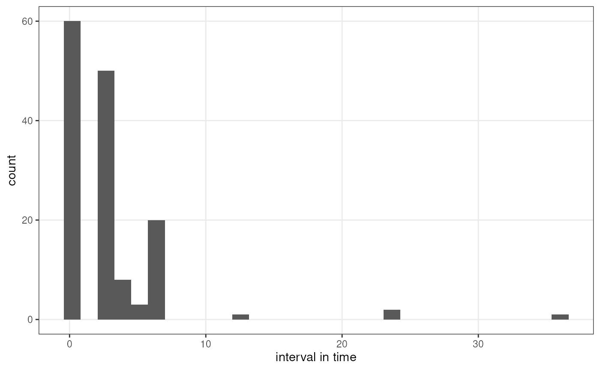
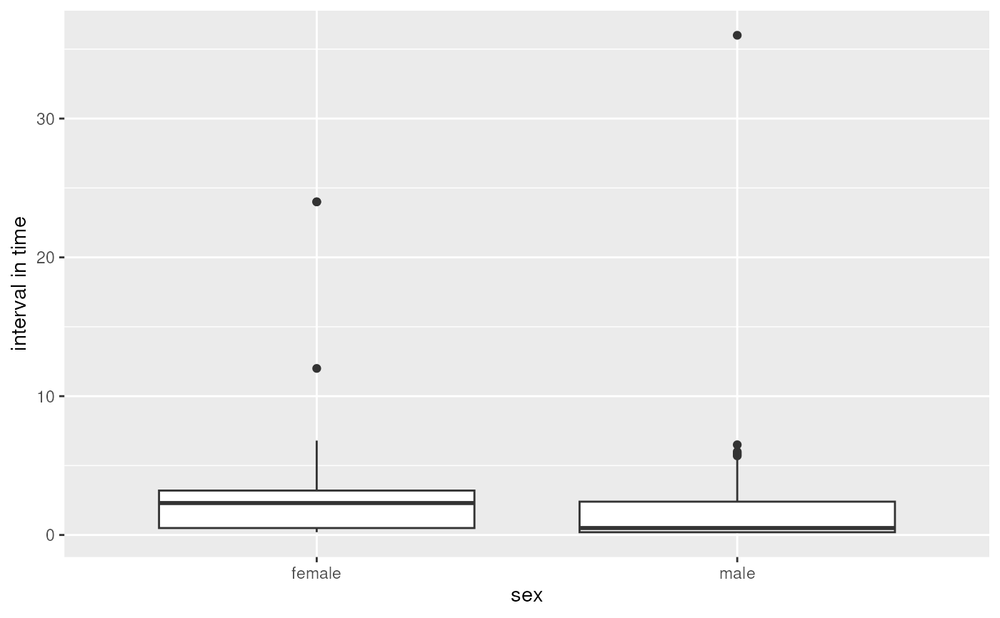

Plot intervals between consecutive samples
Source:R/AllGenerics.R, R/plotGaps.R, R/zzz-mae.R
plotGaps.RdplotGaps() draws the distribution of the intervals between
consecutive samples of each subject.
Usage
plotGaps(x, ...)
# S4 method for class 'SummarizedExperiment'
plotGaps(
x,
time.col,
group,
group.by = NULL,
layout = c("histogram", "density", "box"),
...
)
# S4 method for class 'MultiAssayExperiment'
plotGaps(x, ..., experiment = 1L)Arguments
- x
a
SummarizedExperimentobject.- ...
additional arguments passed to
geom_histogram,geom_densityorgeom_boxplot.- time.col
Character scalar. Specifies the column fromcolData(x)that contains sampling times: numeric,Date,POSIXctor a factor of visits.- group
Character scalar. Specifies the column fromcolData(x)that identifies subjects.- group.by
Character scalar. Specifies the column fromcolData(x)that splits the intervals into groups. Each interval takes the value of its later sample. (Default:NULL)- layout
Character scalar. Draws a histogram ("histogram"), density curves ("density") or box plots ("box"). (Default:"histogram")- experiment
Character scalarorinteger scalar. For aMultiAssayExperiment, the experiment to plot; its samples get thecolDataofx. (Default:1L)
Details
Intervals are in time.col units: days for Date, hours for
POSIXct times and visit steps for visits.
Examples
data("hitchip1006", package = "miaTime")
tse <- hitchip1006
tse <- tse[, tse$subject %in% names(which(table(tse$subject) >= 2))]
plotGaps(tse, time.col = "time", group = "subject", bins = 30)

# Intervals by sex
plotGaps(tse, time.col = "time", group = "subject", group.by = "sex",
layout = "box")
